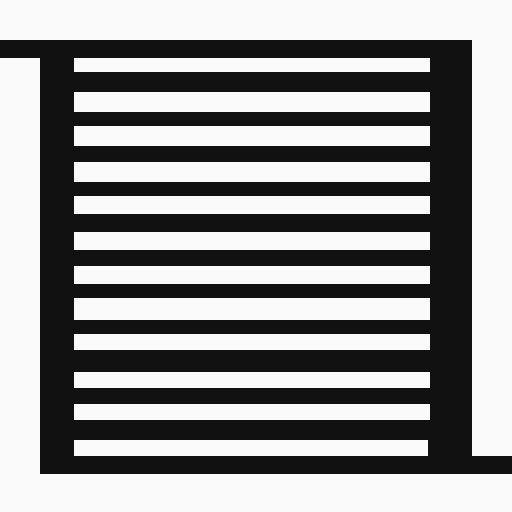
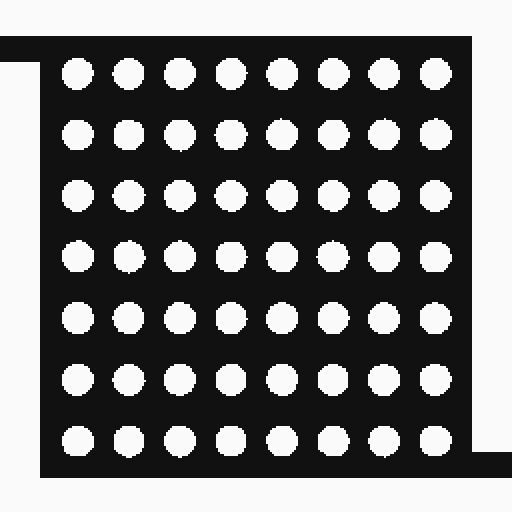
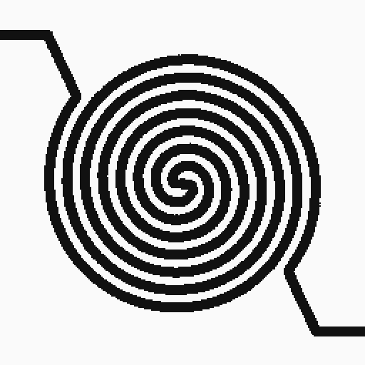
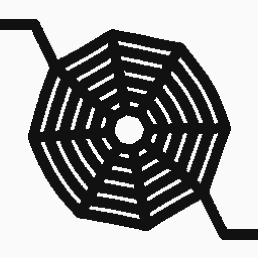
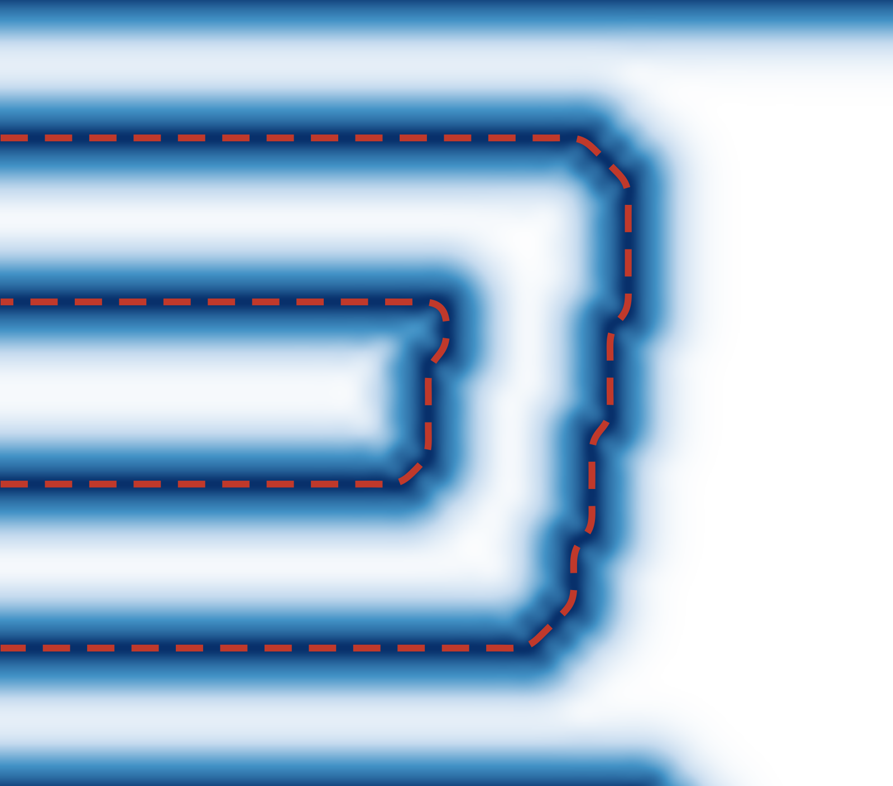
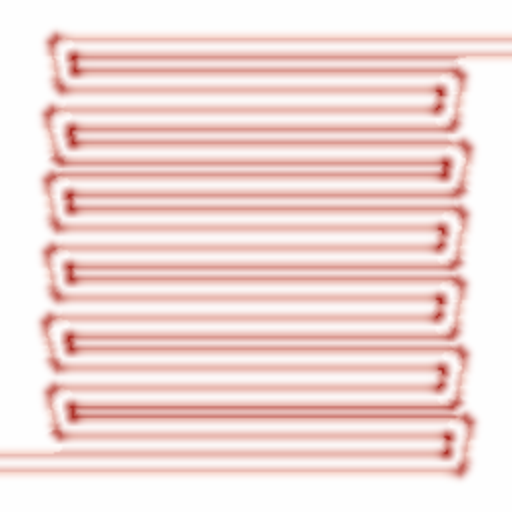
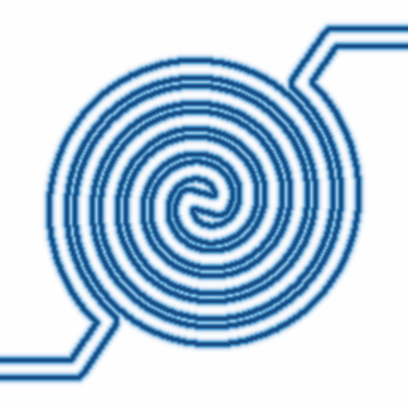
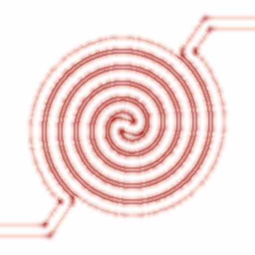
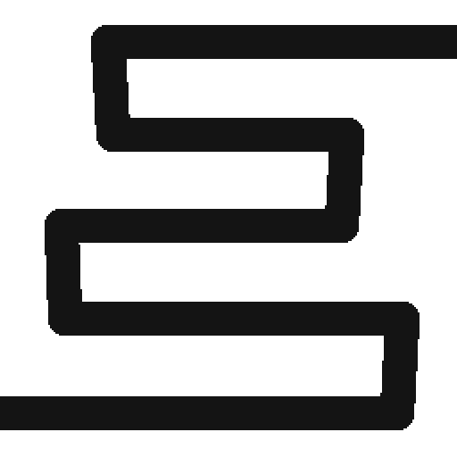

993 / 1,000 PASS
Failure flags
- 6 × disconnected channel
- 6 × isolated fluid region
- 1 × volume fraction out of range
 Orbit Data Center
Orbit Data Center
Explore Infinite Designs with AI
Generation quality control
98.8% overall (4,941 / 5,000)
Final model · 1,000 generated tiles per family.
993 / 1,000 PASS

98.0%980 / 1,000 PASS

100%1,000 / 1,000 PASS

97.2%972 / 1,000 PASS

99.6%996 / 1,000 PASS
Failure flags may overlap: a tile can carry more than one flag. Automatic gates only judge the generated results and do not influence generation. Geometry gates are a pre-screening step; CFD/CHT remains a separate validation step.
Conditional diffusion pipeline
5 families × 2,000 tiles = 10,000 SDFs. Each tile is 256 × 256.
Family + channel width condition every layer. Train for 50 epochs; weight boundaries up to 5× and corners/thin walls up to 13×.
Freeze the model; train a Serpentine-only add-on on 2,000 tiles. Select 5, 7, 9, 11 or 13 passes. Other families stay unchanged.
DDIM: 100 denoising steps. Generate 5,000 tiles in about 80 minutes.
SDF > 0 → fluid mask. Check connectivity, minimum wall thickness and channel structure. CFD/CHT is a separate step.
Serpentine and Spiral often break or merge channels.
Boundary Weighting counts pixels near channel walls up to 5× more, raising Spiral from 56.3% to 94.3%.

Corner·Thickness Weighting raises Spiral to 97.2%, but Serpentine drops to 80.8%.



Pass-Count Conditioning tells Serpentine how many passes to draw, raising it to 99.3%. The other four families are unchanged.

| Stage | Serpentine | Parallel | Pin | Spiral | Spider Web | Overall |
|---|---|---|---|---|---|---|
| Baseline (plain MSE) | 70.0 | 98.6 | 99.9 | 56.3 | 96.2 | 84.2 |
| + Boundary Weighting | 91.0 | 99.0 | 99.9 | 94.3 | 99.6 | 96.8 |
| + Corner·Thickness Weighting | 80.8 | 98.0 | 100.0 | 97.2 | 99.6 | 95.1 |
| + Pass-Count Conditioning (final) | 99.3 | 98.0 | 100.0 | 97.2 | 99.6 | 98.8 |
Training tiles have only odd pass counts, but the model was never told the count. It sometimes drew even counts or misplaced turns. Of 192 failures, 163 had a wrong pass structure. Even-count tiles failed 64.5% of the time, versus 13.6% for odd-count tiles.
Dark red in the Corner·Thickness Weighting figures marks extra weight. Red in the failed generated tile highlights where the pass structure goes wrong.